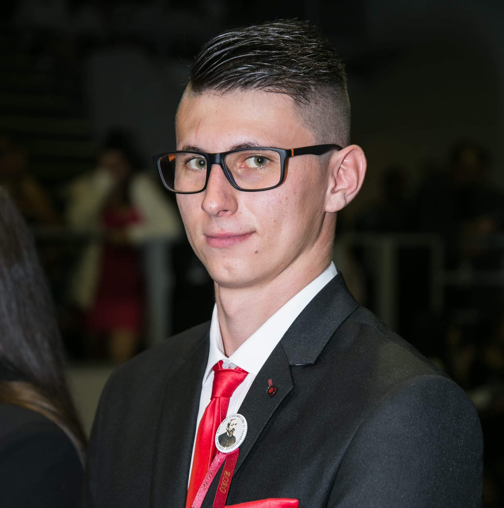

|  | ||
Vadon Zsolt |
||
|
Üdvözlöm a profilomon! Vadon Zsolt vagyok, 21 éves kezdő programozó vagyok. Szabadidőm álltalában a sportolással és E-Sportal telik, valamint hódolók az autók iránti szeretettemnek. Sokáig aktív röplabda játékos voltam, amit körülbelül 1 éve abba kellett hagynom. Az ezutáni periódusban jöttem rá, hogy engem igen is érdekel az informatika világa, motivált vagyok arra, hogy a szakmában minél jobban fejlődni tudjak és megfelelni az lehetséges munkahelyeim elvárásainak.Célom a tudásom folyamatos fejlesztése. Referenciáimat az alábbi linkeken megtalálhatják, illetve Facebookon szinte bármikor fel tudja venni velem a kapcsolatot! |
||
Kapcsolat |
Referenciáim |
|

|

|
|